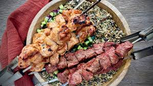

The Afghani Kebbab

Ingredients
Descriptions
the afghani kebbab is so simple.
it is so delicious.
and it is generally fried
with broiler and coal in a
natural way.
How To Cook
- cut the beff in to small pieces
about 3cm3.
- now warm the broiler with hot coals
- push skewer inside cuted beefs.
put the skewer on the broiler.
- fresh the coals with shaking the fan.
do it fastly.while shaking the fan
turn around the skewers.do it
while the beef became soft and cooked
- after the beff cooked.pour the
salt and pepper on it.get the bread
and enjoy the afghani kebbab.